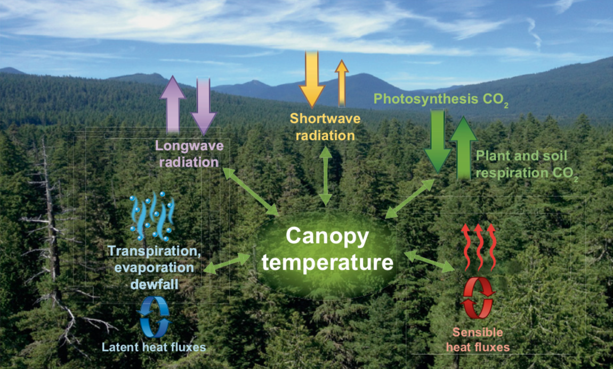
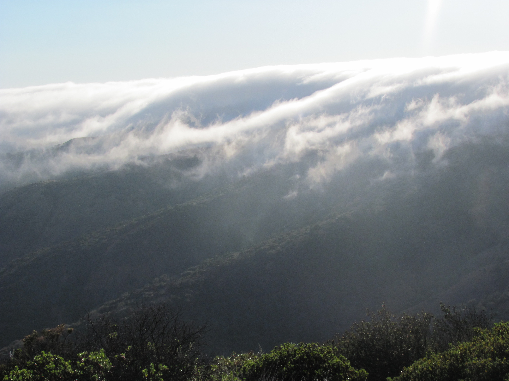

About Me

I study interactions between climate and terrestrial carbon and water cycling from canopy to global scales.
I am mainly interested in how plants are affected by climate change, and in turn how large scale plant-atmosphere exchanges impact climate.
My research interests are broadly classified as:
Regional-scale atmospheric modelling to quantify sources and sinks of CO2.
Canopy-scale meaurements of trace gases (OCS,13CO2), eddy covariance flux, and ecopshyiological data (sap-flow, high- frequency thermal imaging of canopies)
to understand plant-atmospheric interactions of CO2, H2O at the ecosystem scale.
Using satellite imagery to quantify spatial and temporal patterns of low lying cloudcover.
Currently I am a postdoc in the Carbon Cycle Greenhouse Gases Group at NOAA's Global Monitoring Laboratory supoervised by Dr. Caroline Alden and Dr. John Miller.
Education:
PhD, Forest Ecosystems and Society, Oregon State University 2018
M.A., Geography, University of California Santa Barbara 2013
M.Sc., Environmental Sciences, University of East Anglia 2010
BSc. (H), Chemistry, University of Delhi 2009
Publications: Google Scholar
Research
Project I: Evaluating potential bias in satellite XCO2 retrievals over North America
Interannual variabilty in the atmsopheric growth rate of CO2 is largely driven by variability in uptake and release by terrestrial ecosystems.
However, gross fluxes like photosynthesis and respiration are not directly measurable on large scales.
Inverse models combine carefully calibrated measurements of CO2 mole fraction with models of atmsopheric transport to infer Net Ecosystem Exchange at regional to global scales.
However, measurement networks remain sparse in large parts of the world.
Satellites such as NASA's OCO-2 can potentially provide unprecedneted spatial coverage information, but data need to be highly precise and accurate.
Co-authors and I evaluate these data and find small biases in certain months that are similar to the signals of interest.
We argue that continued improvement in these data is necessary. These findings are currently under review at Atmospheric Chemistry and Physics.
The manuscript is available here.
 Project II: Constraining North American Carbon flux using satellite observations of XCO2
Project II: Constraining North American Carbon flux using satellite observations of XCO2
Building on Project I, I aim to understand constraints on satellite retreivals to be able to provide robust estimates of North American NEE.
I am using the CarbonTracker-Lagrange regional model.
CarbonTracker-Lagrange is a regional atmospheric inverse model in which surface flux is optimized using surface-sensitivity arrays
from high resolution simulations of atospheric transport and atmospheric measurements of CO2. Using a suite of inversions, we seek to
understand at what spatial and temporal resolutions OCO-2 can provide robust estimates of NEE and quantify the magnitude of flux uncertainty reduction.
Additionally, we test the impact of sub-ppm scale biases in OCO-2 XCO2 on retrieved fluxes. Results are contrasted with inversions with in-situ CO2 mole fraction
measurements from NOAA and Environment Canada. Withheld vertical profile data from NOAA’s aircraft and AirCore networks are used to evaluate bias in optimized flux estimates.
Stay tuned for results!
Projects I and II are supported by a NASA Carbon Monitoring System grant
to P.I. Kaiyu Guan (UIUC),
and Co-P.I. Caroline Alden (CIRES/NOAA-GML).
Projects III: Inferrering ecosytem-scale photosynthesis and biosphere-atmosphere interactions from Carbonyl Sulfide
This was the focus of the PhD dissertation at Oregon State University, Under the supervision of Dr. Proff. Christopher Still.
Carbonyl Sulfide (OCS) has recently been proposed as a proxy for estimating photosynthesis from ecosystem to global scales.
I installed a profiling system to measure drawdown of OCS, H2O, CO2, and CO at an old-growth Douglas Fir/
Western Hemlock forest site (Wind River, WA: US-wrc). With the help of co-located eddy flux data, I quantified OCS uptake by the forest,
and related it to photosyntheis and transpiration. We found significant nocturnal uptake of OCS by epiphytes (e.g, lichen, mosses) at the site. We found that
during the day, OCS uptake was sensitive to diffuse radiation, and also quantified dynamics of ecosystem OCS exchange during heatwaves.
These findings were published here and
here. I am currenty working on two other manuscripts. In the first one
we estimate a large nocturnal sink of OCS in the canopy, that is not related to uptake byleaf stomata but related to uptake by epiphyes.
This is the first study to quanitfy epiphyte uptake of this gas at the ecosystem scale. Our estimate of nocturnal uptake is comparable in magnitude to daytime uptake by canopy leaves at the site and larger than previously
observed estimates of epiphytic OCS uptake. In the second manuscript (in prep.) we use our published estimates of daytime OCS uptake to explain the forest response to wildfire smoke.

Projects IV: Measuring and modeling canopy temperatures

Fig. 1 from Still, Rastogi et al., (2021)
Temperature is a fundamental component of all aspects of plant function. The temperature of leaves in particular is
important in determining plant metabolism and therefore the exchange of CO2, water, energy with the environment.
Controls of leaf temprature therefore has been a subject of extensive study by plant physiologists, ecologists, and atmospheric scientists.
On the global scale, satellite-based thermal imaging of leaf temperature (now available for almost 5 decades) has been used to infer large scale land-atmsopheric
water fluxes. While there are numerous studies at the leaf and global scales, temperature at the canopy scale is less well understood. I am interested in
using high- frequency thermal imaging to learn what canopy temperature can tell us about ecophysiology of vegetated systems as well as plant-atmosphere interactions.
Projects V: Using remote sensing observations and ground based observations to quantify trends in coastal low-lying clouds and fog.
Low lying cloud-cover and fog are important components of the water budget in many semi-arid/arid ecosystems. In these systems,
plants rely of low cloud and fog to alleviate drought stress. While cloudcover reduces ambient air temperature and the atmospheric demand of moisture from the leaf surface (VPD),
fog droplets can coalesce on leaf surfaces and provide moisture for plant function. Using multi-scale remote sensing data, weather ballons, and local airport observations
I quantified spatio-temporal
patterns of cloud and fog over the Channel Islands of California. A key component of this work was to discrimate regions that experienced low-cloudiness from those
that were inundated by fog. These maps have been used by the Nature Conservancy in conserving and restoring these landscapes.
More recently, using similar methods, colleagues and I investigated spatio-temporal of low-lying clouds over the Pacific Northwestern US.
We detected a decreasing trend in 22 years of satellite observations of summer time cloud cover in the areas bounded
by the coast range and the Cascade mountains.

Fog on Santa Cruz Island in California.
Contact
bharat.rastogi@noaa.gov bharat.rastogi@colorado.edu
Address: 2D-146 Global Monitoring Laboratory NOAA Earth System Research Laboratories, Boulder CO: 80305
-->